- គណនាមុំចារិកក្នុងរង្វង់ និងបង្ហាញលក្ខណៈរបស់វា
- គណនាមុំឈមនៃចតុកោណចារិកក្នុងរង្វង់
- គណនាមុំក្នុង មុំក្រៅ និងមុំកើតដោយបន្ទាត់ប៉ះរង្វង់និងអង្កត់ធ្នូ។
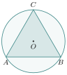
1. មុំផ្ចិត
នៅថ្នាក់ទី 8 យើងបានសិក្សារួចមកហើយនូវមុំផ្ចិត ។
ឧទាហរណ៍ទី 1 ៖ គេមានរង្វង់ផ្ចិត \(\displaystyle O\) គេគូសកាំ \(\displaystyle OP\) និង \(\displaystyle OR\) គេបានមុំផ្ចិតពីរ គឺមុំល្មម \(\displaystyle \angle POR\) ស្កាត់ដោយធ្នូតូច \(\displaystyle PR\) និងមុំផត \(\displaystyle \angle POR\) ស្កាត់ដោយធ្នូធំ \(\displaystyle PR\) ។ មុំទាំងពីរនេះហៅថាមុំផ្ចិត ។
ឧទាហរណ៍ទី 2 ៖ គេមានធ្នូពីរ \(\displaystyle AB\) និង \(\displaystyle DC\) នៅលើរង្វង់ផ្ចិត \(\displaystyle O\) ។ ធ្នូ \(\displaystyle AB\) ស្កាត់ដោយមុំផ្ចិត \(\displaystyle \angle AOB\) និងធ្នូ \(\displaystyle DC\) ស្កាត់ដោយមុំផ្ចិត \(\displaystyle \angle COD\) ។ បើធ្នូ \(\displaystyle AB\) និងធ្នូ \(\displaystyle DC\) ត្រួតស៊ីគ្នានោះ ធ្នូទាំងពីរប៉ុនគ្នា គេបានមុំផ្ចិតដែលស្កាត់ធ្នូទាំងពីរក៏ប៉ុនគ្នាដែរ ។
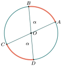
ជាទូទៅ ៖ ក្នុងរង្វង់មួយធ្នូពីរប៉ុនគ្នា ស្កាត់ដោយមុំផ្ចិតពីរប៉ុនគ្នា ហើយច្រាសមកវិញកាលណាមុំផ្ចិតពីរប៉ុនគ្នានោះធ្នូស្កាត់ទាំងពីរក៏ប៉ុនគ្នា ។
លំហាត់គំរូ ៖ នៅក្នុងរង្វង់ផ្ចិត \(\displaystyle O\) គេឱ្យអង្កត់ផ្ចិត \(\displaystyle AD\) ហើយ \(\displaystyle C\) ជាចំណុចមួយនៃធ្នូ \(\displaystyle BD\) ដែល \(\displaystyle \arc{AB} = 40^\circ\) និង \(\displaystyle \arc{CD} = 60^\circ\) ។ ចូរគណនារង្វាស់ \(\displaystyle \angle AOC\) ។
ចម្លើយ ៖
នាំឱ្យ \(\displaystyle \angle AOC = 40^\circ + 80^\circ = 120^\circ\) ។ ដូចនេះ \(\displaystyle \angle AOC = 120^\circ\) ។
ប្រតិបត្តិ ៖ គេឱ្យរង្វង់ផ្ចិត \(\displaystyle O\) និង \(\displaystyle B\) ជាចំណុចកណ្តាលនៃធ្នូ \(\displaystyle AC\) ។ ចូរបង្ហាញថា \(\displaystyle \angle AOB = \angle COB\) ។
2. មុំចារិកក្នុងរង្វង់
2.1. និយមន័យ
ឧទាហរណ៍ ៖ គេមានរង្វង់ផ្ចិត \(\displaystyle O\) គេគូសអង្កត់ធ្នូពីរ \(\displaystyle AN\) និង \(\displaystyle NB\) កាត់គ្នាត្រង់ចំណុច \(\displaystyle N\) មួយនៅលើរង្វង់ ។ គេបានមុំ \(\displaystyle \angle ANB\) ជាមុំដែលស្ថិតនៅលើរង្វង់ ហៅថាមុំចារិកក្នុងរង្វង់ដែលស្កាត់ធ្នូ \(\displaystyle AQB\) ។
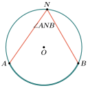
និយមន័យ ៖ មុំចារិកក្នុងរង្វង់ជាមុំដែលមានកំពូលស្ថិតនៅលើរង្វង់ ហើយជ្រុងទាំងពីរជាអង្កត់ធ្នូ ។
លំហាត់គំរូ ៖ តើមុំខាងក្រោមនេះជាមុំចារិកក្នុងរង្វង់ ឬទេ ? ព្រោះអ្វី ?
ចម្លើយ ៖ ក. មុំ \(\displaystyle \angle xAy\) មិនមែនជាមុំចារិកក្នុងរង្វង់ទេព្រោះកំពូល \(\displaystyle A\) មិនស្ថិតនៅលើរង្វង់ ។ ខ. មុំ \(\displaystyle \angle xAy\) មិនមែនជាមុំចារិកក្នុងរង្វង់ទេព្រោះជ្រុង \(\displaystyle Ay\) នៅក្រៅរង្វង់ ។
ប្រតិបត្តិ ៖ តាមរូបខាងស្ដាំនេះ តើមានមុំចារិកក្នុងរង្វង់ប៉ុន្មាន ?
2.2. មុំចារិកក្នុងរង្វង់និងធ្នូ
ឧទាហរណ៍ទី 1 ៖ គេឱ្យ \(\displaystyle \angle ABC\) ជាមុំចារិកក្នុងរង្វង់មានផ្ចិត \(\displaystyle O\) ។ \(\displaystyle BC\) ជាអង្កត់ផ្ចិត ។ បង្ហាញថា \(\displaystyle \angle ABC = \frac{1}{2}\arc{AC}\) ។
គូសភ្ជាប់ \(\displaystyle OA\) គេបានត្រីកោណសមបាត \(\displaystyle AOB\) (\(\displaystyle OA = OB = r\) កាំរង្វង់) ។ ដូចនេះ \(\displaystyle \angle A = \angle B\) ។ តែមុំ \(\displaystyle \angle AOC = \angle A + \angle B\) មុំក្រៅនៃ \(\displaystyle \triangle AOB\) ។ \(\displaystyle \angle AOC = 2\angle B\) ឬ \(\displaystyle \angle B = \frac{1}{2}\angle AOC\) ។ ដោយមុំ \(\displaystyle \angle AOC = \arc{AC}\) (មុំផ្ចិតស្កាត់ដោយធ្នូ \(\displaystyle AC\)) នាំឱ្យ \(\displaystyle \angle B = \frac{1}{2}\arc{AC}\) ។
ឧទាហរណ៍ទី 2 ៖ គេឱ្យ \(\displaystyle \angle ABC\) ចារិកក្នុងរង្វង់ផ្ចិត \(\displaystyle O\) ដែលផ្ចិត \(\displaystyle O\) ស្ថិតក្នុង \(\displaystyle \angle AOB\) ។ បង្ហាញថា \(\displaystyle \angle ABC = \frac{1}{2}\arc{AC}\) ។
គេមាន \(\displaystyle \angle ABC\) ជាមុំចារិកក្នុងរង្វង់ ។ គូសអង្កត់ផ្ចិតពីចំណុច \(\displaystyle B\) កាត់ផ្ចិត \(\displaystyle O\) ជួបរង្វង់ត្រង់ \(\displaystyle D\) ។
ដូចនេះ \(\displaystyle \angle ABC = \frac{1}{2}\arc{AC}\) ។
ជាទូទៅ ៖ គ្រប់មុំចារិកក្នុងរង្វង់មានរង្វាស់ស្មើនឹងកន្លះ រង្វាស់ធ្នូដែលស្កាត់ដោយមុំនោះ ។
លំហាត់គំរូ ៖ ចូរគណនារង្វាស់ធ្នូ \(\displaystyle AB\), \(\displaystyle AC\), \(\displaystyle BC\) តាមរូបខាងស្ដាំ ។
ចម្លើយ ៖
ប្រតិបត្តិ ៖ គេមាន \(\displaystyle \angle ABC\) ចារិកក្នុងរង្វង់ផ្ចិត \(\displaystyle O\) ដែលមានចំណុច \(\displaystyle O\) ស្ថិតនៅក្រៅ \(\displaystyle \angle ABC\) ។ ដោយប្រើលក្ខណៈនៃឧទាហរណ៍ទី 1 ចូរបង្ហាញថា \(\displaystyle \angle ABC = \frac{1}{2}\arc{AC}\) (រូបខាងស្ដាំ) ។
2.3. មុំចារិកក្នុងរង្វង់ស្កាត់ធ្នូតែមួយ
ឧទាហរណ៍ ៖ គូសរង្វង់ផ្ចិត \(\displaystyle O\) និងកាំ \(\displaystyle 5cm\) ។ គេដៅចំណុចពីរ \(\displaystyle A\) និង \(\displaystyle B\) នៅលើរង្វង់ ។ ដៅចំណុចពីរ \(\displaystyle P\) និង \(\displaystyle Q\) លើធ្នូធំ \(\displaystyle AB\) ។ ភ្ជាប់ \(\displaystyle AP\), \(\displaystyle AQ\), \(\displaystyle BP\) និង \(\displaystyle BQ\) ។
ក. រង្វាស់មុំ \(\displaystyle \angle APB\) និង \(\displaystyle \angle AQB\) តើអ្នកសង្កេតឃើញដូចម្តេច ?
ខ. ដៅចំណុច \(\displaystyle R\) មួយទៀតនៅលើធ្នូធំ \(\displaystyle AB\) ។ ភ្ជាប់ \(\displaystyle AR\) និង \(\displaystyle BR\) ។ រង្វាស់មុំ \(\displaystyle \angle ARB\) តើអ្នកសង្កេតឃើញដូចម្តេច ? តាមសកម្មភាពនេះយើងសង្កេតឃើញថារង្វាស់មុំ \(\displaystyle \angle APB = \angle AQB = \angle ARB\) ។
ជាទូទៅ ៖ គ្រប់មុំចារិកក្នុងដែលស្កាត់ធ្នូតែ 1 មានរង្វាស់ស្មើគ្នា ។
ឧទាហរណ៍ ៖ តាមរូបខាងស្ដាំនេះចូររករង្វាស់មុំ \(\displaystyle a\) និង \(\displaystyle b\) ។
- \(\displaystyle a = 32^\circ\) (មុំស្កាត់ធ្នូ \(\displaystyle MN\) តែមួយ)
- \(\displaystyle b = 10^\circ\) (មុំស្កាត់ធ្នូ \(\displaystyle PQ\) តែមួយ) ។
លំហាត់គំរូ ៖ គេឱ្យអង្កត់ធ្នូ \(\displaystyle BD = DC, \angle ABD = 42^\circ\) និង \(\displaystyle \angle DBC = 65^\circ\) (ដូចរូបខាងស្ដាំ) ។
ចូរគណនា ៖ ក. \(\displaystyle \angle BDC\) ខ. \(\displaystyle \angle BAC\) គ. \(\displaystyle \angle DAB\) ឃ. \(\displaystyle \angle DEC\) ។
ចម្លើយ ៖ ក. ក្នុង \(\displaystyle \triangle BDC\)
ខ. គេបាន \(\displaystyle \angle BAC = \angle BDC\) (មុំចារិកក្នុងរង្វង់ស្កាត់ធ្នូ \(\displaystyle BC\) តែមួយ) នាំឱ្យ \(\displaystyle \angle BAC = 50^\circ\) ។
គ. គេមាន \(\displaystyle \angle DAB = \angle DAC + \angle BAC\)
តាមចំណុច ខ. \(\displaystyle \angle BAC = 50^\circ\)
ឃ. ក្នុង \(\displaystyle \triangle DEC\) គេបាន
ប្រតិបត្តិ ៖ ក្នុងរូបខាងស្ដាំនេះអង្កត់ធ្នូ \(\displaystyle AC\) ប្រសព្វនឹង \(\displaystyle BD\) ត្រង់ \(\displaystyle I\) ។ គេឱ្យ \(\displaystyle \angle ACB = 34^\circ\) និង \(\displaystyle \angle CAD = 45^\circ\) ។ ចូរគណនា \(\displaystyle \angle AIB\) ។
2.4. មុំផ្ចិតនិងមុំចារិកក្នុងរង្វង់
នេះជាករណីពិសេសនៃទំនាក់ទំនងរវាងមុំផ្ចិតនិងមុំចារិកក្នុងរង្វង់ដែលស្កាត់ធ្នូតែមួយ ។
ឧទាហរណ៍ ៖ គេគូសរង្វង់ផ្ចិត \(\displaystyle O\) និងកាំ \(\displaystyle 5cm\) ។ ដៅចំណុច \(\displaystyle A\), \(\displaystyle B\) និង \(\displaystyle C\) នៅលើរង្វង់ ។ គេបានមុំ \(\displaystyle \angle ABC\) ជាមុំស្រួច ។ ភ្ជាប់ \(\displaystyle OA\), \(\displaystyle OC\), \(\displaystyle AB\) និង \(\displaystyle BC\) ។ វាស់មុំ \(\displaystyle \angle ABC\) និង \(\displaystyle \angle AOC\) ។ តើយើងកត់សម្គាល់ឃើញដូចម្តេច ?
កាលណាយើងវាស់មុំទាំងពីរនេះទៅយើងសង្កេតឃើញថាមុំ \(\displaystyle \angle AOC = 2\angle ABC\) ។
ជាទូទៅ ៖ មុំផ្ចិតនៃរង្វង់មួយមានរង្វាស់ស្មើនឹងពីរដងមុំចារិកក្នុងរង្វង់ដែលស្កាត់ធ្នូតែមួយ ។
លំហាត់គំរូទី1 ៖ ក្នុងរូបខាងក្រោមនេះ ចូររករង្វាស់មុំ \(\displaystyle x\), \(\displaystyle y\) និង \(\displaystyle a\) ។
រូប(ក) រូប(ខ) រូប(គ)
ចម្លើយ ៖ ក. គេមាន \(\displaystyle \angle BOC = 2\angle BAC\) (មុំផ្ចិតស្មើនឹងពីរដងមុំចារិកក្នុងស្កាត់ធ្នូតែមួយ)
ដូចនេះ \(\displaystyle x = 38^\circ\) ។
ខ. គេមាន \(\displaystyle y = 2\angle QPR\) (មុំផ្ចិតស្មើនឹងពីរដងមុំចារិកក្នុងរង្វង់ស្កាត់ធ្នូតែមួយ)
ដូចនេះ \(\displaystyle y = 200^\circ\) ។
គ. \(\displaystyle \angle WOY = 360^\circ - 130^\circ = 230^\circ\)
ដូចនេះ \(\displaystyle a = 115^\circ\) ។
លំហាត់គំរូទី2 ៖ រង្វង់មួយមានផ្ចិត \(\displaystyle O\) ដែល \(\displaystyle \angle OBC = 30^\circ\) ។ ចូរគណនា \(\displaystyle \angle BCO\), \(\displaystyle \angle BOC\) និង \(\displaystyle \angle BAC\) ។
ចម្លើយ ៖ គេមាន \(\displaystyle \angle BCO = \angle CBO\) (មុំបាតនៃត្រីកោណសមបាត \(\displaystyle BOC\)) \(\displaystyle \angle BCO = 30^\circ\) ។
ដូចគ្នាដែរគេបាន
ដូចនេះ \(\displaystyle \angle BAC = 60^\circ\) ។
លំហាត់គំរូទី3 ៖ រង្វង់មួយមានផ្ចិត \(\displaystyle O\) ដែល \(\displaystyle \angle ABO = 30^\circ\) និង \(\displaystyle \angle ACO = 20^\circ\) ។ ចូរគណនារង្វាស់មុំ \(\displaystyle \angle BAC\) និង \(\displaystyle \angle BOC\) ។
ចម្លើយ ៖ គេមាន \(\displaystyle \angle BAC = \angle BAO + \angle CAO\)
ក្នុង \(\displaystyle \triangle BAO\) មាន \(\displaystyle \angle BAO = \angle ABO\) (មុំបាតនៃត្រីកោណសមបាត \(\displaystyle AOB\)) \(\displaystyle \angle ABO = 30^\circ\) នាំឱ្យ \(\displaystyle \angle BAO = 30^\circ\) ។
ក្នុង \(\displaystyle \triangle CAO\) មាន \(\displaystyle \angle CAO = \angle ACO\) (មុំបាតនៃត្រីកោណសមបាត \(\displaystyle AOC\)) \(\displaystyle \angle ACO = 20^\circ\) នាំឱ្យ \(\displaystyle \angle CAO = 20^\circ\) ។
ប្រតិបត្តិ ៖ រង្វង់មួយមានផ្ចិត \(\displaystyle O\) ដែល \(\displaystyle \angle AOB = 60^\circ\) ។ ចូរគណនារង្វាស់មុំ \(\displaystyle \angle ACB\), \(\displaystyle \angle ADB\) និង \(\displaystyle \angle AEB\) ។ (រូបខាងស្ដាំ)
C. មុំចារឹកក្នុងកន្លះរង្វង់
ឧទាហរណ៍៖ គេមានរង្វង់ផ្ចិត \(\displaystyle O\) និង \(\displaystyle AB\) ជាអង្កត់ផ្ចិតនៃរង្វង់។ គេបាន
- \(\displaystyle AB\) ជាអង្កត់ផ្ចិត
- ធ្នូ \(\displaystyle ADB\) និងធ្នូ \(\displaystyle ACB\) ជាកន្លះរង្វង់
- \(\displaystyle \angle ACB\) ជាមុំចារឹកលើរង្វង់ ។
គេថា \(\displaystyle \angle ACB\) ជាមុំចារឹកក្នុងកន្លះរង្វង់ដែលផ្គុំដោយអង្កត់ផ្ចិតនោះ
គេបាន
ដូចនេះ
ជាទូទៅ៖ គ្រប់មុំចារឹកក្នុងកន្លះរង្វង់ជាមុំកែង។
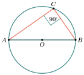
លំហាត់គំរូទី ១៖ តាមរូបខាងស្ដាំនេះ \(\displaystyle AB\) ជាអង្កត់ផ្ចិត។ ចូរគណនារង្វាស់មុំ \(\displaystyle a\) និង \(\displaystyle b\) ។
ចម្លើយ៖ គេបាន
ជាមុំចារឹកក្នុងកន្លះរង្វង់ ។
ក្នុង \(\displaystyle \triangle ABC\) មាន
នាំឱ្យ
ដូចនេះ
លំហាត់គំរូទី ២៖ រង្វង់មួយដែលមានផ្ចិត \(\displaystyle O\) និងអង្កត់ផ្ចិត \(\displaystyle AB\) ។ ចូរគណនា \(\displaystyle a\) និង \(\displaystyle b\) (()រូបខាងស្ដាំ()) ។
ចម្លើយ៖ \(\displaystyle a=\angle BAC\) មុំចារឹកក្នុងធ្នូ \(\displaystyle BC\) តែមួយ ដូចនេះ
នៅក្នុង \(\displaystyle \triangle ABC\) គេបាន
មុំចារឹកក្នុងកន្លះរង្វង់
សម្មតិកម្ម ។
ដូចនេះ
នាំឱ្យ
ដូចនេះ
លំហាត់គំរូទី ៣៖ គេមានរង្វង់ដែលមានផ្ចិត \(\displaystyle O\) និង \(\displaystyle PT\) ជាបន្ទាត់ប៉ះទៅនឹងរង្វង់ត្រង់ \(\displaystyle T\) ។ បើ \(\displaystyle \angle TAP=35^\circ\) ។
ចូរគណនា៖ ក. \(\displaystyle \angle ATB\) ខ. \(\displaystyle \angle APT\) គ. \(\displaystyle \angle BTP\)
ចម្លើយ៖
ក.
មុំចារឹកក្នុងកន្លះរង្វង់ ។
ខ. ក្នុង \(\displaystyle \triangle APT\) គេបាន
ផលបូកមុំក្នុងត្រីកោណ \(\displaystyle APT\)
សម្មតិកម្ម
មុំបាតនៃត្រីកោណសមបាត
ដោយ \(\displaystyle TP\) ជាបន្ទាត់ប៉ះនឹងរង្វង់ និង \(\displaystyle OT\) ជាកាំនៃរង្វង់
គេបាន
ដូចនេះ
គ.
ប្រតិបត្តិ៖ តាមរូបខាងស្ដាំនេះមានរង្វង់ដែលមានផ្ចិត \(\displaystyle O\) និងអង្កត់ផ្ចិត \(\displaystyle AC\) ហើយ \(\displaystyle AD=DC\) ។ ចូរគណនារង្វាស់មុំ \(\displaystyle x,\ y,\ z\) ។
D. មុំឈមនៃចតុកោណចារឹកក្នុងរង្វង់
និយមន័យ
ចតុកោណដែលមានកំពូលទាំងបួនស្ថិតនៅលើរង្វង់មួយ ហៅថាចតុកោណចារឹកក្នុងរង្វង់។ រង្វង់នោះហៅថារង្វង់កាត់ក្រៅចតុកោណ។ ក្នុងចតុកោណចារឹកក្នុងរង្វង់ \(\displaystyle ABCD\) គេមាន \(\displaystyle \angle A\) និង \(\displaystyle \angle C\) ជាមុំឈមនឹងគ្នា ហើយ \(\displaystyle \angle B\) និង \(\displaystyle \angle D\) ក៏ជាមុំឈមនឹងគ្នាដែរ។
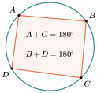
លក្ខណៈមុំឈម
ឧទាហរណ៍ទី ១៖ គេមានរង្វង់ផ្ចិត \(\displaystyle O\) និងកាំមានប្រវែង \(\displaystyle 5\mathrm{cm}\) ។ គេជ្រើសចំណុច \(\displaystyle A,\ B,\ C\) និង \(\displaystyle D\) តាមលំដាប់នៅលើរង្វង់។ ភ្ជាប់ \(\displaystyle AB,\ BC,\ DC\) និង \(\displaystyle DA\) ដើម្បីទទួលបានចតុកោណ \(\displaystyle ABCD\) ចារឹកក្នុងរង្វង់ផ្ចិត \(\displaystyle O\) ។
ក. តាមរូបខាងស្ដាំ \(\displaystyle \angle DAB\) និង \(\displaystyle \angle DCB\) រួមគ្នាមានរង្វាស់ស្មើបាន
ខ. តាមរូប \(\displaystyle \angle CBA\) និង \(\displaystyle \angle CDA\) រួមគ្នាមានរង្វាស់ស្មើបាន
ឧទាហរណ៍ទី ២៖ គេឱ្យចតុកោណ \(\displaystyle ABCD\) ចារឹកក្នុងរង្វង់ដែលមានផ្ចិត \(\displaystyle O\) ។ ចូរបង្ហាញថា
ក.
ខ.
ក. គេបាន
ខ. គេបាន
ជាទូទៅ៖ ចំពោះចតុកោណចារឹកក្នុងរង្វង់ មុំឈមគ្នាមានផលបូកស្មើ \(\displaystyle 180^\circ\)។
លំហាត់គំរូ៖ គេឱ្យចតុកោណ \(\displaystyle ABCD\) ចារឹកក្នុងរង្វង់ដែលមានផ្ចិត \(\displaystyle O\) ដូចរូបខាងក្រោម។ ចូរគណនារង្វាស់ \(\displaystyle x\) និង \(\displaystyle y\) ។
ចម្លើយ៖
មុំឈមនៃចតុកោណចារឹកក្នុងរង្វង់
នាំឱ្យ
ដូចនេះ
មុំឈមនៃចតុកោណចារឹកក្នុងរង្វង់
នាំឱ្យ
ប្រតិបត្តិ៖ តាមរូបខាងស្ដាំនេះ ចូរគណនារង្វាស់ \(\displaystyle a\) និង \(\displaystyle b\) ។
E. មុំក្រៅនៃចតុកោណចារឹកក្នុងរង្វង់
ឧទាហរណ៍៖ គេមានចតុកោណចារឹកក្នុងរង្វង់ \(\displaystyle PQRS\) ។ គេពន្លាតជ្រុងមួយនៃចតុកោណ \(\displaystyle PS\) រហូតដល់ \(\displaystyle T\) ។
គេសង្កេតឃើញថា
មុំជាប់នៅលើបន្ទាត់ត្រង់
និង
មុំឈមនៃចតុកោណចារឹកក្នុងរង្វង់ ។
ដូច្នេះគេបាន
\(\displaystyle x\) ជាមុំក្រៅចតុកោណ \(\displaystyle PQRS\) ចារឹកក្នុងរង្វង់ និង \(\displaystyle z\) ជាមុំចារឹកក្នុងចតុកោណឈមជាមួយនឹង \(\displaystyle x\) ។
ជាទូទៅ៖ មុំក្រៅចតុកោណចារឹកក្នុងរង្វង់មានរង្វាស់ស្មើនឹងមុំឈមចារឹកក្នុងចតុកោណនោះ។
លំហាត់គំរូទី ១៖ \(\displaystyle ABCD\) ជាចតុកោណចារឹកក្នុងរង្វង់ដែលមាន \(\displaystyle AD=AB\) និង \(\displaystyle AD\) អូសបន្តទៅ \(\displaystyle E\) ។ បើ \(\displaystyle \angle CDE=70^\circ\) និង \(\displaystyle \angle CDB=72^\circ\) ។
ចូរគណនា៖ ក. \(\displaystyle \angle BAD\) ខ. \(\displaystyle \angle BCD\) ។
ចម្លើយ៖
មុំជាប់គ្នា
ដោយ
ផលបូកមុំក្នុងត្រីកោណមួយ
ដោយ
មុំបាតនៃត្រីកោណសមបាត
ដូចនេះ
មុំឈមនៃចតុកោណចារឹកក្នុងរង្វង់
លំហាត់គំរូទី ២៖ គេមានចតុកោណ \(\displaystyle ABDC\) និង \(\displaystyle CDFE\) ជាចតុកោណចារឹកក្នុងរង្វង់ (()រូបខាងស្ដាំ()) ។ ចូរគណនាមុំ \(\displaystyle a\) ។
ចម្លើយ៖ គេមាន \(\displaystyle CDFE\) ជាចតុកោណចារឹកក្នុងរង្វង់
មុំក្រៅចតុកោណចារឹកក្នុងរង្វង់ស្មើនឹងមុំឈម
ក្នុងចតុកោណ \(\displaystyle ABDC\) គេមាន
មុំឈមនៃចតុកោណចារឹកក្នុងរង្វង់
លំហាត់គំរូទី ៣៖ \(\displaystyle EFGH\) ជាចតុកោណចារឹកក្នុងរង្វង់ដែលមាន \(\displaystyle EH\) ស្របទៅនឹង \(\displaystyle FG\) ហើយ \(\displaystyle DG\) ជាអង្កត់ផ្ចិតនៃរង្វង់ផ្ចិត \(\displaystyle O\) ។ គេឱ្យ \(\displaystyle \angle DOH=82^\circ\) និង \(\displaystyle \angle DGE=17^\circ\) ។
ចូរគណនា៖ ក. \(\displaystyle \angle HEG\) ខ. \(\displaystyle \angle HGF\) គ. \(\displaystyle \angle FEG\) ។
ចម្លើយ៖
ក.
មុំបន្ទាត់ត្រង់
មុំផ្ចិតស្មើពីរដងមុំចារឹកក្នុងរង្វង់
នាំឱ្យ
ខ.
មុំឆ្លាស់ក្នុង \(\displaystyle FG\parallel EH\)
ផលបូកមុំក្នុងត្រីកោណ
មុំបាតនៃត្រីកោណសមបាត
នាំឱ្យ
គ.
មុំឈមនៃចតុកោណចារឹកក្នុងរង្វង់
នាំឱ្យ
ប្រតិបត្តិ៖ គេមានចតុកោណ \(\displaystyle ABCD\) ចារឹកក្នុងរង្វង់ដែលមាន \(\displaystyle AB=BC\) ។ គេអូសបន្ត \(\displaystyle CD\) ដល់ \(\displaystyle E\) ដែលមាន \(\displaystyle \angle ACE=27^\circ\) និង \(\displaystyle \angle ADE=76^\circ\) ។
ចូរគណនា៖ ក. \(\displaystyle \angle ACB\) ខ. \(\displaystyle \angle BAD\) ។
F. មុំដែលមានកំពូលមិននៅលើរង្វង់
មុំក្នុងរង្វង់
មុំក្នុងរង្វង់ជាមុំដែលមានកំពូលនៅក្នុងរង្វង់។
ឧទាហរណ៍៖ គេមាន \(\displaystyle \angle AED\) ជាមុំក្នុងរង្វង់ដែលមានផ្ចិត \(\displaystyle O\) ។ បង្ហាញថា
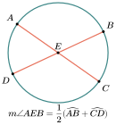
គេបាន
មុំចារឹកកាត់ធ្នូ \(\displaystyle AD\)
មុំចារឹកកាត់ធ្នូ \(\displaystyle BC\)
តែ
មុំក្រៅត្រីកោណ
ជាទូទៅ៖ មុំក្នុងរង្វង់មានរង្វាស់ស្មើនឹង កន្លះផលបូករង្វាស់ធ្នូដែលកាត់ដោយជ្រុងទាំងពីរ។
លំហាត់គំរូ៖ ក្នុងរូបខាងស្ដាំនេះ ចូរគណនា \(\displaystyle \angle SPQ\) ។
ចម្លើយ៖ គេបាន
ប្រតិបត្តិ៖ គេមាន \(\displaystyle \angle CMD\) ជាមុំក្នុងរង្វង់ដែលមានផ្ចិត \(\displaystyle O\) ដូចរូបខាងស្ដាំ។ គេឱ្យថា \(\displaystyle \angle CAD=60^\circ\) និង \(\displaystyle \angle ADB=75^\circ\) ។
ចូរគណនា \(\displaystyle \angle CMD\) ។
មុំក្រៅរង្វង់
មុំក្រៅរង្វង់ជាមុំដែលមានកំពូលនៅក្រៅរង្វង់ ហើយមានជ្រុងទាំងពីរកាត់រង្វង់។
ឧទាហរណ៍៖ គេមាន \(\displaystyle \angle AED\) ជាមុំក្រៅរង្វង់ដែលមានផ្ចិត \(\displaystyle O\) ។ បង្ហាញថា
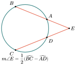
គេបាន
ជាទូទៅ៖ មុំក្រៅរង្វង់មានរង្វាស់ស្មើនឹង កន្លះផលដករង្វាស់ធ្នូដែលកាត់ដោយជ្រុងទាំងពីរនោះ។
លំហាត់គំរូ៖ ចូរគណនា \(\displaystyle \angle D\) ក្នុងរូបខាងក្រោម។
ចម្លើយ៖
ក.
ខ.
ប្រតិបត្តិ៖ ចូរគណនា \(\displaystyle \angle D\) ក្នុងរូបខាងស្ដាំនេះ។
G. មុំផ្គុំដោយបន្ទាត់ប៉ះនិងអង្កត់ធ្នូ
ឧទាហរណ៍ទី ១៖ ក្នុងរូបខាងក្រោមនេះ មាន \(\displaystyle PA\) ជាអង្កត់ធ្នូដែលចែករង្វង់ជាពីរផ្នែក។ \(\displaystyle XPY\) ជាបន្ទាត់ប៉ះនឹងរង្វង់ត្រង់ \(\displaystyle P\) ។ \(\displaystyle \angle ABP\) ជាមុំចារឹកក្នុងរង្វង់ដែលមានអង្កត់ធ្នូ \(\displaystyle PA\) នៅក្នុងនោះ \(\displaystyle \angle XPA\) ជាមុំដែលផ្គុំដោយបន្ទាត់ប៉ះនិងអង្កត់ធ្នូ \(\displaystyle PA\) ។
ឧទាហរណ៍ទី ២៖ ក្នុងរង្វង់ដែលមានកាំ \(\displaystyle 4\mathrm{cm}\) ។ គេកំណត់ \(\displaystyle A,\ B\) និង \(\displaystyle P\) នៅលើរង្វង់បានជាត្រីកោណ \(\displaystyle PBA\) មាន \(\displaystyle \angle B\) ជាមុំមួយ។ គេមានបន្ទាត់ \(\displaystyle XY\) ប៉ះនឹងរង្វង់ត្រង់ \(\displaystyle P\) ហើយ \(\displaystyle \angle XPA\) និង \(\displaystyle \angle PBA\) ។ គេសង្កេតឃើញថារង្វាស់មុំនេះស្មើគ្នា គេអាចសរសេរថា
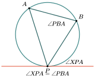
ជាទូទៅ៖ មុំដែលផ្គុំដោយបន្ទាត់ប៉ះនិងអង្កត់ធ្នូត្រូវស្មើនឹងមុំចារឹកក្នុងរង្វង់ដែលមានអង្កត់ធ្នូនោះ។
សម្រាយបញ្ជាក់៖ គេឱ្យរង្វង់ផ្ចិត \(\displaystyle O\) និង \(\displaystyle AT\) ជាបន្ទាត់ប៉ះនឹងរង្វង់ត្រង់ \(\displaystyle A\) ហើយ \(\displaystyle \angle ACB\) ជាមុំចារឹកក្នុងរង្វង់ដែលមានអង្កត់ធ្នូ \(\displaystyle AB\) នៅក្នុងនោះ។
បង្ហាញថា
ការស្រាយបញ្ជាក់នេះចំពោះ \(\displaystyle \angle TAB\) ជាមុំស្រួច។ គូសអង្កត់ផ្ចិត \(\displaystyle AD\) ។
គេបាន
ដូចនេះ
ម្យ៉ាងទៀតនៅក្នុង \(\displaystyle \triangle ABD\)
ដូចនេះ
តាម ((1)) និង ((2)) និងលក្ខណៈនៃមុំចារឹកក្នុងរង្វង់ គេបាន
ដូចនេះ
លំហាត់គំរូទី ១៖ ក្នុងរូបខាងស្ដាំនេះ មាន \(\displaystyle ST\) ជាបន្ទាត់ប៉ះនឹងរង្វង់។ ចូររករង្វាស់មុំ \(\displaystyle a\) និង \(\displaystyle b\) ។
ចម្លើយ៖
គេបាន
មុំដែលផ្គុំដោយបន្ទាត់ប៉ះនិងអង្កត់ធ្នូ
មុំដែលផ្គុំដោយបន្ទាត់ប៉ះនិងអង្កត់ធ្នូ
លំហាត់គំរូទី ២៖ ក្នុងរូបខាងស្ដាំនេះ មាន \(\displaystyle ST\) ជាបន្ទាត់ប៉ះនឹងរង្វង់ត្រង់ \(\displaystyle A\) និង \(\displaystyle BC\) ជាអង្កត់ផ្ចិត។ បើ \(\displaystyle \angle SAB=40^\circ\) ។
ចូរគណនា៖ ក. \(\displaystyle \angle CAT\) ខ. \(\displaystyle \angle CBA\) ។
ចម្លើយ៖
ក. គេបាន
មុំចារឹកក្នុងកន្លះរង្វង់
ខ. គេបាន
មុំដែលផ្គុំដោយបន្ទាត់ប៉ះនិងអង្កត់ធ្នូ ។
លំហាត់គំរូទី ៣៖ គេឱ្យរង្វង់ផ្ចិត \(\displaystyle O\) និង \(\displaystyle ST\) ជាបន្ទាត់ប៉ះនឹងរង្វង់ត្រង់ \(\displaystyle E\) ហើយ \(\displaystyle SHF\) ជាបន្ទាត់កាត់។ គេឱ្យ \(\displaystyle FG=FE\), \(\displaystyle \angle HES=30^\circ\) និង \(\displaystyle \angle FET=56^\circ\) ។
ចូរគណនា៖ ក. \(\displaystyle \angle GFE\) ខ. \(\displaystyle \angle HSE\) ។
ចម្លើយ៖
ក. គេបាន
មុំដែលផ្គុំដោយបន្ទាត់ប៉ះនិងអង្កត់ធ្នូ
ដូចនេះ
ផលបូកមុំក្នុងត្រីកោណសមបាត
ខ. គេបាន
មុំដែលផ្គុំដោយបន្ទាត់ប៉ះនិងអង្កត់ធ្នូ
មុំក្រៅត្រីកោណ
ដូចនេះ
ប្រតិបត្តិ៖ គេឱ្យរង្វង់ដែលមានផ្ចិត \(\displaystyle O\) និង \(\displaystyle ST\) ជាបន្ទាត់ប៉ះនឹងរង្វង់ត្រង់ \(\displaystyle E\) ។ គេឱ្យអង្កត់ \(\displaystyle DE=DF\) និង \(\displaystyle \angle FET=40^\circ\) ។
ចូរគណនា៖
ក. \(\displaystyle \angle EOF\)
ខ. \(\displaystyle \angle DES\) ។
? លំហាត់
- គេឱ្យរង្វង់ដែលមានផ្ចិត \(\displaystyle O\) ហើយអង្កត់ធ្នូ \(\displaystyle AC = AB\) និង \(\displaystyle \angle ABC = 65^\circ\) ។ ចូររករង្វាស់មុំ \(\displaystyle \angle ACB\) និង \(\displaystyle \angle ABO\) (រូបខាងស្ដាំ) ។
- តាមរូបខាងស្ដាំនេះ ចូររករង្វាស់មុំ \(\displaystyle \angle ACD\) , \(\displaystyle \angle BAE\) និង \(\displaystyle \angle BDC\) ។
- ក្នុងរង្វង់ដែលមានផ្ចិត \(\displaystyle O\) គេឱ្យអង្កត់ធ្នូ \(\displaystyle AB\) ស្របនឹង \(\displaystyle CD\) ។ ចូរគណនារង្វាស់មុំ \(\displaystyle \angle BCD\) , \(\displaystyle \angle ADC\) និង \(\displaystyle \angle ABC\) ។
- តាមរូបខាងស្ដាំនេះ ចូររករង្វាស់មុំ \(\displaystyle x\) និង \(\displaystyle y\) ។
- គេឱ្យរង្វង់ដែលមានផ្ចិត \(\displaystyle O\) ។ អង្កត់ធ្នូ \(\displaystyle AC\) និង \(\displaystyle BD\) កាត់គ្នាត្រង់ \(\displaystyle I\) និង \(\displaystyle \angle CAB = 40^\circ\) , \(\displaystyle \angle AIB = 60^\circ\) ។ ចូរគណនារង្វាស់មុំ
ក. \(\displaystyle \angle ACD\) ខ. \(\displaystyle \angle CAD\) ។ - បីចំណុច \(\displaystyle A\) , \(\displaystyle B\) , \(\displaystyle C\) ឋិតនៅលើរង្វង់ដែលមានផ្ចិត \(\displaystyle O\) ដូចរូបខាងស្ដាំនេះ ។ គេឱ្យ \(\displaystyle \angle AOC = 120^\circ\) ។ ចូរគណនារង្វាស់មុំ \(\displaystyle \angle ABC\) ។
- ក្នុងរូបខាងស្ដាំនេះគេមាន \(\displaystyle O\) ជាផ្ចិតនៃរង្វង់ ។ អង្កត់ធ្នូ \(\displaystyle AD\) ស្របនឹង \(\displaystyle BC\) និង \(\displaystyle \angle ACB = 45^\circ\) , \(\displaystyle \angle ACD = 25^\circ\) ។ ចូរគណនារង្វាស់មុំ
ក. \(\displaystyle \angle ADC\) ខ. \(\displaystyle \angle OAB\) ។ - ក្នុងរូបខាងស្ដាំនេះមានចំណុច \(\displaystyle A\) , \(\displaystyle B\) , \(\displaystyle C\) និង \(\displaystyle D\) នៅលើរង្វង់ផ្ចិត \(\displaystyle O\) ។ បើគេបន្លាយ អង្កត់ធ្នូ \(\displaystyle AB\) និង \(\displaystyle CD\) កាត់គ្នាត្រង់ \(\displaystyle P\) ហើយ \(\displaystyle \angle CBD = 35^\circ\) , \(\displaystyle \angle CAP = 70^\circ\) និង \(\displaystyle \angle DBP = 75^\circ\) ។
ចូរគណនា ៖ ក. \(\displaystyle \angle ACD\) ខ. \(\displaystyle \angle APC\) គ. \(\displaystyle \angle DAB\) ។ - ក្នុងរង្វង់ដែលមានផ្ចិត \(\displaystyle O\) និង \(\displaystyle AC\) ជាអង្កត់ផ្ចិត ។ គេបន្លាយអង្កត់ធ្នូ \(\displaystyle BA\) និង \(\displaystyle CD\) ជួបគ្នាត្រង់ \(\displaystyle T\) ហើយ \(\displaystyle AT = AC\) និង \(\displaystyle \angle ATD = 20^\circ\) ។ ចូរគណនារង្វាស់មុំ
ក. \(\displaystyle \angle ADB\) ខ. \(\displaystyle \angle BOC\) គ. \(\displaystyle \angle BDC\) ។ - ក្នុងរង្វង់ផ្ចិត \(\displaystyle O\) ដែលមានអង្កត់ផ្ចិត \(\displaystyle QS\) ប្រសព្វនឹងអង្កត់ធ្នូ \(\displaystyle PR\) ត្រង់ \(\displaystyle M\) ចំណុចកណ្តាលនៃ \(\displaystyle PR\) ។ គេឱ្យ \(\displaystyle \angle POQ = 134^\circ\) ។ ចូរគណនារង្វាស់មុំ
ក. \(\displaystyle \angle PRQ\) ខ. \(\displaystyle \angle RPQ\) គ. \(\displaystyle \angle RSQ\) ។ - គេមានរង្វង់ដែលមានផ្ចិត \(\displaystyle O\) និង \(\displaystyle PQ\) ជាបន្ទាត់ប៉ះរង្វង់ ត្រង់ \(\displaystyle R\) ។ \(\displaystyle RS\) ជាអង្កត់ផ្ចិតនិង \(\displaystyle \angle ROQ = 48^\circ\) ។ ចូរគណនារង្វាស់មុំ
ក. \(\displaystyle \angle OQR\) ខ. \(\displaystyle \angle RST\) គ. \(\displaystyle \angle TRQ\) ។ - គេមានរង្វង់ផ្ចិត \(\displaystyle O\) និង \(\displaystyle ABE\) ជាត្រីកោណ ។ បើរង្វង់កាត់ \(\displaystyle BE\) ត្រង់ \(\displaystyle C\) និង \(\displaystyle AC\) ត្រង់ \(\displaystyle D\) ។ ចូរគណនារង្វាស់មុំ \(\displaystyle x\) , \(\displaystyle y\) និង \(\displaystyle z\) ។
- គេមាន \(\displaystyle ABCD\) ជាចតុកោណចារិកក្នុងរង្វង់ដែលមាន \(\displaystyle AB = BC\) និង \(\displaystyle \angle ACE = 25^\circ\) ។ គេបន្លាយ \(\displaystyle CD\) ដល់ \(\displaystyle E\) និង \(\displaystyle \angle ADE = 80^\circ\) ។
ចូរគណនារង្វាស់មុំ ក. \(\displaystyle \angle ABC\) ខ. \(\displaystyle \angle BAD\) ។ - គេមាន \(\displaystyle TKXM\) និង \(\displaystyle SNXL\) ជាបន្ទាត់ប៉ះរង្វង់មួយដូចរូបខាងស្ដាំនេះ ។ \(\displaystyle JKL\) ស្ថិតលើបន្ទាត់តែមួយនិង \(\displaystyle \angle TKJ = 56^\circ\) ហើយ \(\displaystyle \angle NJK = 40^\circ\) ។ ចូរគណនា
រង្វាស់មុំ ក. \(\displaystyle \angle MLN\) ខ. \(\displaystyle \angle LMN\) គ. \(\displaystyle \angle KLN\) ។
ការវាយតម្លៃសមត្ថភាព (PISA)
កង់វិលយក្ស (Ferris Wheel)
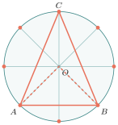
គំនូរមិនតាមខ្នាត
កង់វិលយក្សមួយមានរាងជារង្វង់ផ្ចិត \(\displaystyle O\)។ កន្ត្រកអ្នកដំណើរស្ថិតនៅចំណុច \(\displaystyle A\), \(\displaystyle B\), និង \(\displaystyle C\) លើរង្វង់នៃកង់វិល។ វិស្វករបានវាស់មុំនៅផ្ចិត \(\displaystyle \angle AOB = 90^\circ\) ដើម្បីគណនាគម្លាតរវាងកន្ត្រក។
សំណួរទី១៖ តើមុំ \(\displaystyle \angle ACB\) ដែលអ្នកដំណើរនៅចំណុច \(\displaystyle C\) មើលទៅកន្ត្រក \(\displaystyle A\) និង \(\displaystyle B\) មានទំហំប៉ុន្មានដឺក្រេ? ចូរពន្យល់ដោយប្រើលក្ខណៈមុំចារិកក្នុងរង្វង់។
តំបន់សុវត្ថិភាពសមុទ្រ (Marine Safety Zone)
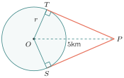
កោះតូចមួយ \(\displaystyle O\) ត្រូវបានហ៊ុមព័ទ្ធដោយតំបន់ថ្មប៉ប្រះទឹកជារាងរង្វង់។ កប៉ាល់មួយនៅចំណុច \(\displaystyle P\) ចង់បើកទៅកាន់ចំណុច \(\displaystyle T\) និង \(\displaystyle S\) ដែលជាព្រំប្រទល់សុវត្ថិភាព (បន្ទាត់ប៉ះរង្វង់ចេញពីចំណុច \(\displaystyle P\))។
សំណួរទី១៖ បើកប៉ាល់នៅចម្ងាយ \(\displaystyle OP = 5\mathrm{km}\) ពីចំណុចកណ្តាលកោះ ហើយកាំនៃតំបន់ថ្មប៉ប្រះទឹកគឺ \(\displaystyle r = 2\mathrm{km}\) តើចម្ងាយពីកប៉ាល់ទៅចំណុចប៉ះ \(\displaystyle T\) (\(\displaystyle PT\)) មានប្រវែងប៉ុន្មាន?
បង្អួចតុបតែង (Decorative Window)
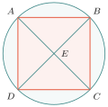
ជាងឈើម្នាក់កំពុងធ្វើបង្អួចរាងចតុកោណចារិកក្នុងរង្វង់ \(\displaystyle ABCD\) ដែលមាន អង្កត់ទ្រូង \(\displaystyle AC\) និង \(\displaystyle BD\) ជាអង្កត់ផ្ចិតរង្វង់ ហើយកាត់គ្នាត្រង់ \(\displaystyle E\)។ គាត់វាស់បានមុំ \(\displaystyle \angle ADB = 45^\circ\) និង \(\displaystyle \angle BAC = 45^\circ\)។
សំណួរទី១៖ ដោយប្រើលក្ខណៈមុំចារិកក្នុងរង្វង់ និងចតុកោណចារិកក្នុងរង្វង់ ចូរគណនាមុំ \(\displaystyle \angle ACD\) និងមុំ \(\displaystyle \angle BDC\) ។ តើបង្អួចនេះជារាងចតុកោណកែងឬទេ? ហេតុអ្វី?
© ២០២៦ លោកគ្រូ សាន សុខលី · «គណិតវិទ្យាថ្នាក់ទី៩ បែបទំនើប» · រក្សាសិទ្ធិគ្រប់យ៉ាង។ សៀវភៅនេះកំពុងសរសេរ ខ្លឹមសារអាចនឹងកែប្រែ។